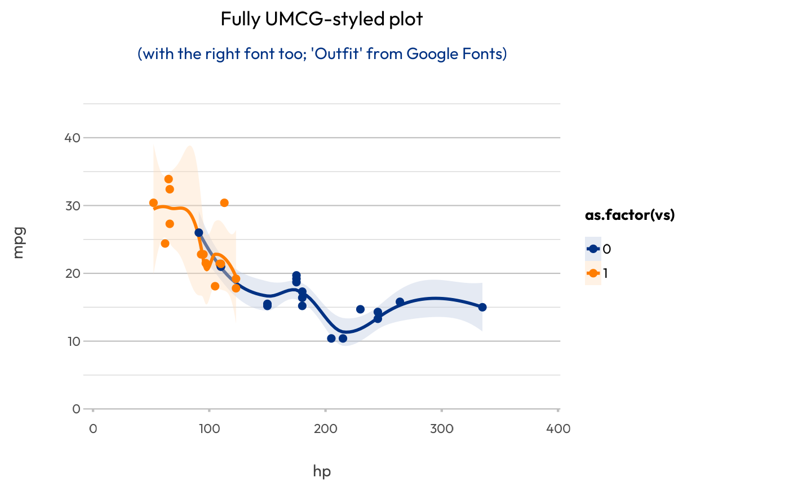

These are ggplot2 helpers to add organisational colours to ggplot objects.
Usage
scale_colour_umcg(..., n)
scale_fill_umcg(..., n)
register_umcg_plot_style()
unregister_umcg_plot_style()Arguments
- ...
arguments passed on to
ggplot2::scale_colour_manual()orggplot2::scale_fill_manual()- n
Number of colours required.
Examples
library(ggplot2)
p <- mtcars |>
ggplot(aes(x = hp,
y = mpg,
colour = as.factor(vs)),
fill = as.factor(vs)) +
geom_point(size = 3) +
geom_smooth()
#> Warning: Arguments in `...` must be used.
#> ✖ Problematic argument:
#> • fill = as.factor(vs)
#> ℹ Did you misspell an argument name?
p
#> `geom_smooth()` using method = 'loess' and formula = 'y ~ x'
p +
scale_colour_umcg(n = 2) +
scale_fill_umcg(n = 2) +
labs(title = "UMCG colours")
#> `geom_smooth()` using method = 'loess' and formula = 'y ~ x'
# With plot2(), this all goes automatically with less code
mtcars |>
plot2(x = hp,
y = mpg,
category = as.factor(vs),
smooth = TRUE,
title = "Fully UMCG-styled plot",
subtitle = "(with the right font too; 'Outfit' from Google Fonts)")
#> ℹ Using type = "point" since both axes are numeric
#> `geom_smooth()` using method = 'loess' and formula = 'y ~ x'
